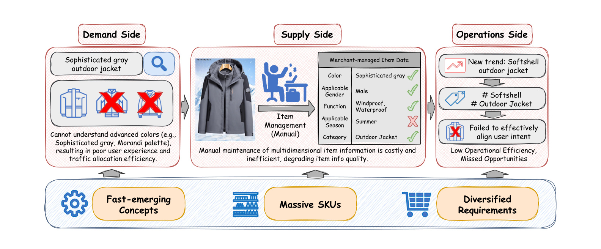
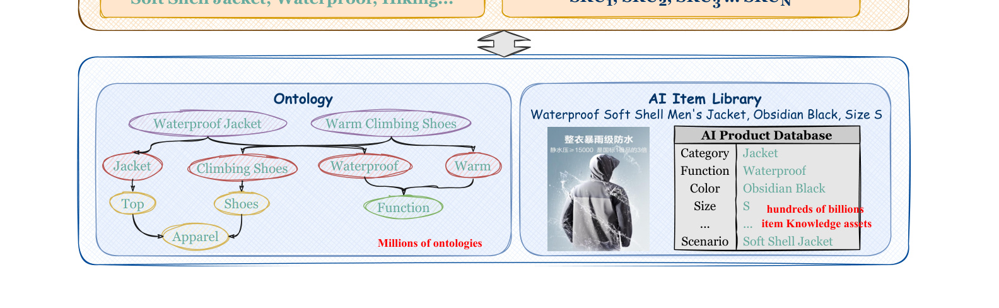
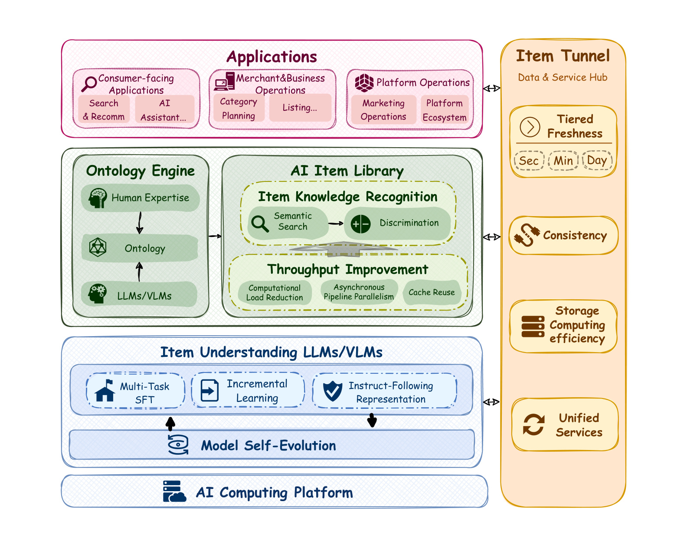
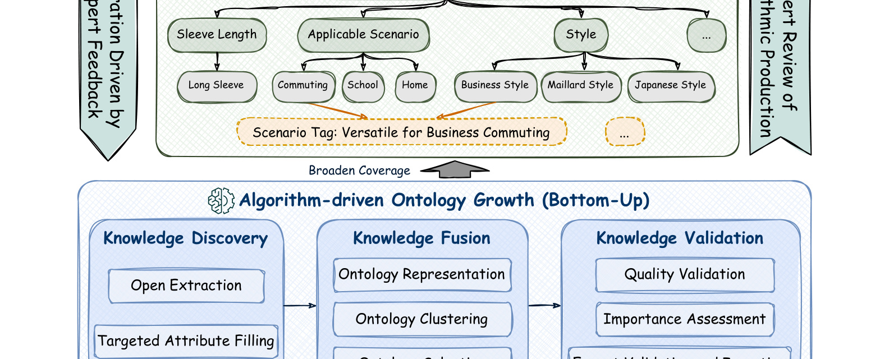
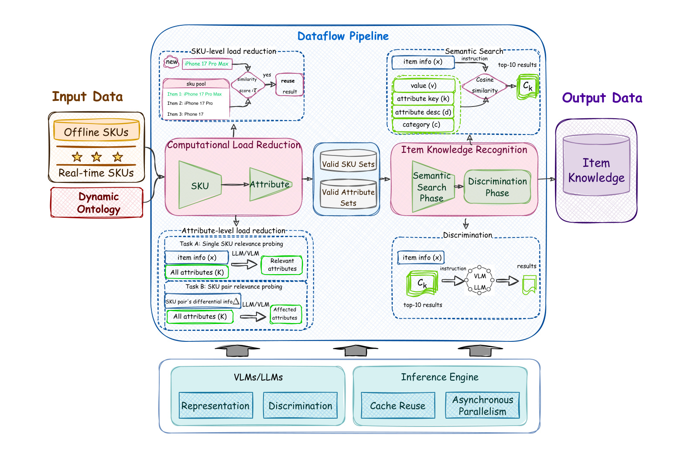
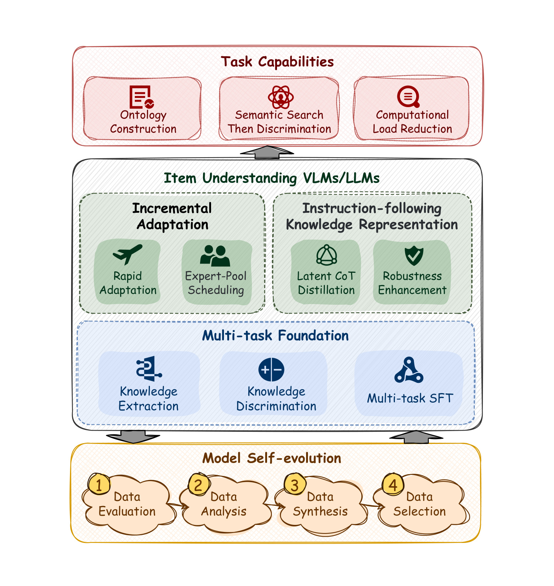
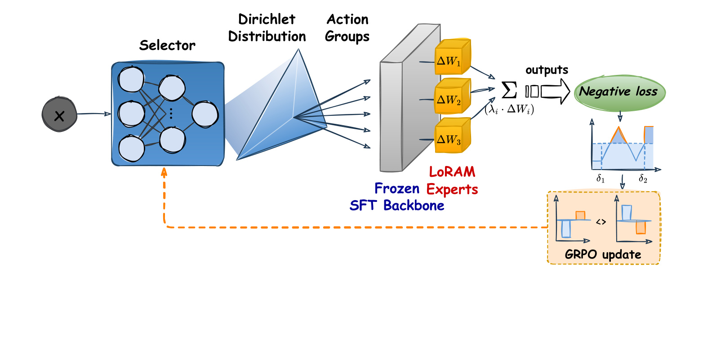
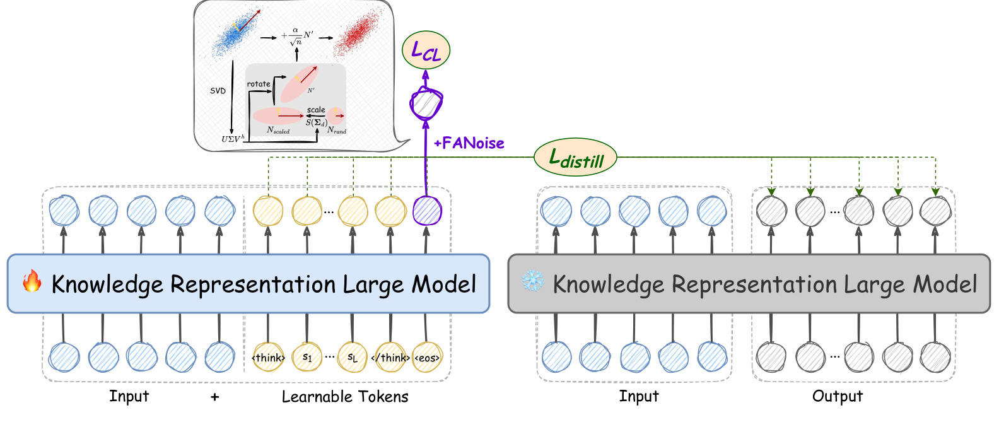
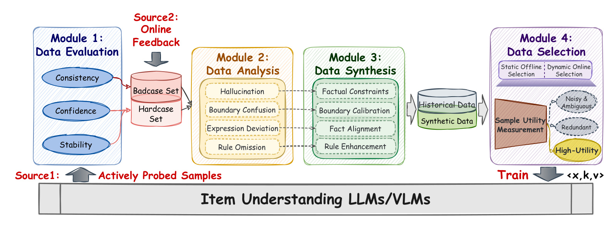

论文链接：arXiv:2606.28070
- 论文：JD Oxygen AI Item Center (Oxygen AIIC) V1: An Industrial-Scale LLM/VLM-Centric Solution for Item Understanding, Management, and Applications
- 机构：JD.com / Oxygen AIIC 团队
- 方向：工业级商品理解、商品知识生产、LLM/VLM、搜索推荐基础设施
- 核心判断：这篇文章不是提出一个单一模型，而是在京东真实电商规模下，把本体工程、商品知识库、大模型迭代、数据服务通道和业务应用闭合成一个商品知识基础设施。
1. 背景和问题
在京东这种拥有 7 亿以上活跃用户、数百万商家和数百亿 SKU 的平台上，传统商品知识系统同时被快速出现的新概念、海量 SKU 的高质量知识生产、以及下游场景对格式和新鲜度的差异化要求卡住。 论文把问题放在电商平台的全链路里看：用户侧希望用自然语言、场景词、颜色风格和功能偏好找到商品；商家侧需要低成本维护标题、类目、品牌、核心属性、卖点和图片；平台运营侧又要把趋势感知、类目规划、商品治理、广告投放、搜索推荐和价格治理放在同一套知识底座上。如果商品知识仍停留在人工维护、封闭标签、弱语义匹配和一次性抽取，系统就会同时出现三种后果：用户意图无法对齐，商家维护成本过高，平台错过新趋势和细分场景。这个背景使 Oxygen AIIC 的问题定义比普通属性抽取更重：它既要持续发现新概念，又要把这些概念转成可信的本体和商品知识，还要按不同业务的新鲜度要求稳定交付。

Figure 1 把失败模式画得很具体。需求侧的例子是用户或运营描述“高级灰”“莫兰迪色系”这类风格词时，传统属性系统只看见普通颜色或无法理解高级表达，搜索和流量分发就会失准；供给侧的例子是商家手工维护颜色、性别、功能、季节、类目等多维信息，维护成本越高，数据质量越容易下降；运营侧的例子是“软壳冲锋衣”这类新趋势快速出现，但类目和标签系统更新慢，导致趋势洞察、招商和商品组织滞后。它说明 Oxygen AIIC 的目标不是“多抽几个属性”，而是让平台在需求、供给、运营之间形成可持续更新的商品语义层。换句话说，论文把同一个商品的颜色、功能、季节、场景、趋势词和用户表达都放进同一条链路里，要求系统既能理解新表达，也能把理解结果回写到稳定本体和知识库中。

Figure 2 的截图改为原图下半部分，重点保留 Item Tunnel、本体和 AI Item Library 三个底座区域。这个局部仍能说明生命周期图的核心逻辑：上层类目规划、商品发布、用户理解、搜索推荐和运营应用并不是直接调用某个大模型，而是通过 Item Tunnel 消费统一商品知识；本体提供类目、属性和场景标签，AI Item Library 维护 SKU 到知识的结构化映射。论文在原图中还标出自动属性填充超过 80%、搜索流量覆盖 80.4%、商品信息问题下降 37%、决策周期从周级缩短到天级，说明这套系统必须被业务闭环检验，不能只停留在离线抽取指标。
论文认为，传统 BERT/NER 或任务微调模型的主要短板有两层。第一，它们把本体知识和模型参数耦合得太紧，新属性、新风格、新场景不断加入时，要么重新标注和训练，要么出现分布外泛化下降。第二，它们的准确率高度依赖人工标注，人工又无法覆盖数十亿商品、数百万本体项和每天数亿级更新。LLM/VLM 的价值在这里不是简单替代人工，而是提供开放语义理解、少样本泛化、多模态理解和推理能力；但论文也很清楚，大模型直接生成属性值会带来成本、延迟、幻觉和输出不可控的问题，所以 Oxygen AIIC 的设计核心是把大模型能力包进可审计、可约束、可服务化的工业系统。
Oxygen AIIC 围绕四个支柱展开。第一是人机协同本体工程，用专家定义的类目、属性键、属性值和场景标签作为骨架，再用算法从商品信息、用户查询和公开内容里发现、融合、验证新概念。第二是 AI Item Library，其中最关键的是 Semantic Search then Discrimination，即先语义检索候选本体值，再让判别模型在候选集合里选择，避免自由生成。第三是自演化的商品理解 LLM/VLM，通过多任务基础模型、LoRAM 增量专家、指令跟随向量学习和坏例闭环，让模型在不失控的情况下持续变好。第四是统一 Item Tunnel，把商品知识按秒级、分钟级、天级的新鲜度服务给搜索、推荐、商品发布、运营和治理。这个组合让论文更像一篇工业系统论文：贡献点不是某个 benchmark 上的小幅提升，而是把知识生产质量、吞吐成本、模型演进和业务消费同时纳入设计约束。
2. 方法
2.1 从本体和生命周期定义系统边界
Oxygen AIIC 的第一步是把商品知识拆成可治理的对象。论文将本体组织为四类元素：Category 表示商品类目层级，Attribute Key 表示属性维度，Attribute Value 表示具体属性值，Scenario Tag 表示更高层的消费场景或组合概念。前三者构成原子商品知识骨架，Scenario Tag 把多个原子知识组合成业务可用的语义，例如春季徒步、商务通勤、软壳冲锋衣等。这个拆法的好处是：搜索和推荐可以用细粒度属性做召回、排序和过滤，运营可以用场景标签做趋势和供给分析，商品发布可以用核心属性做自动补全和质检。Figure 3 是全篇方法的总图，左侧 Ontology Engine 负责从人类专家、本体、LLM/VLM 中获得知识标准；中间 AI Item Library 负责 Item Knowledge Recognition 和 Throughput Improvement；下方 Item Understanding LLMs/VLMs 提供多任务 SFT、增量学习、知识向量和自演化；右侧 Item Tunnel 负责新鲜度、计算效率、一致性和统一服务；最上层应用矩阵把这些能力接入用户、商家和平台场景。它把大模型从直接回答属性的端到端生成器，放回到一个受本体、候选集、数据服务和反馈机制约束的生产系统里。

Figure 3 的阅读重点是五个模块之间的闭环，而不是单个模块的名字。本体引擎给出可演进的语义标准，AI Item Library 把商品映射到这些标准，Item Understanding LLMs/VLMs 为发现、表示和判别提供模型能力，Item Tunnel 把知识资产以不同新鲜度和接口形态送给应用，应用侧的 bad case、hard case 和业务反馈又回到模型自演化和本体迭代。这个闭环解释了为什么论文会同时讨论本体、检索、判别、缓存、NPU 调度和服务矩阵：任何一层断开，商品知识都无法在数十亿 SKU 规模上持续可靠地产生。它也让后续章节的角色更清楚：本体决定可表达的知识空间，S2D 决定如何把商品映射进空间，模型层决定语义能力如何持续升级，Item Tunnel 决定知识如何被业务稳定消费。

Figure 4 的截图改为原图中部区域，保留 Product Ontology 的属性值示例和下方 Algorithm-driven Ontology Growth 的发现、融合、验证流程。这个局部更直接地展示专家骨架如何和算法扩展接起来：专家定义类目、属性键、代表属性值和场景标签，算法从商品信息、用户查询、网页内容中做知识发现、融合和验证，专家反馈再约束候选概念的插入。论文给出的关键数字是：发现阶段从多源语料中得到约 450 万潜在属性值，融合后压缩为 210 万候选本体概念，约 240 万冗余概念被归并到同义集合。这说明本体扩展不是纯召回任务，去重、规范化和业务重要性排序同样关键；本体发现用 OpenIE 和 Targeted Attribute Filling 两类抽取统一构造训练样本，本体融合再用电商语义 encoder 把同义表达拉近、把相似但不同义的近邻推远，核心公式如下：
符号解释：x 表示商品标题、用户查询或网页内容，k 表示属性键，V 表示候选属性值集合，v 表示具体属性值，c 表示类目，d_k 表示属性描述，I_fuse 是融合任务指令，e 是属性值向量，e_i^+ 和 e_j^- 分别是同义正样本与近邻非同义负样本向量，sim 表示余弦相似度，tau 是温度系数。论文报告发现模型在候选知识抽取上达到 91% precision 和 79% recall，领域适配 encoder 将本体相似度测试集上的 Spearman 相关从 0.62 提升到 0.86。
2.2 AI Item Library：S2D 与计算减负
AI Item Library 的任务是把非结构化商品信息映射到动态本体上。论文没有选择“模型直接生成属性值”，而是提出 Semantic Search then Discrimination。语义检索阶段把动态本体外置为向量索引，新增本体值只要编码入库即可，不必重训模型；判别阶段只在 Top-K 候选集合内判断哪些值与商品一致，从而降低任务复杂度和幻觉风险。这个设计把开放世界问题拆成两个受约束步骤：先高召回找候选，再高精度做判别。同时，吞吐优化把计算范式从“所有 SKU 乘以所有属性”改成“差异化 SKU 乘以高度相关属性”，通过 SKU 级语义复用、属性级相关性探测、SPU 级 prefix cache reuse、vLLM block_size 调优和 CPU/NPU 异步流水线，把模型推理变成能支撑每天数亿级更新的生产链路。

Figure 5 是 S2D 和吞吐优化的核心图。左侧输入包含离线 SKU、实时 SKU 和动态本体；中间先做 Computational Load Reduction，把 SKU 维度压到有效 SKU 集，把属性维度压到有效属性集；随后进入 Item Knowledge Recognition，其中 Semantic Search 返回 top-10 候选，Discrimination 用 LLM/VLM 在候选中做真假判别；右下角的 inference engine 再通过 cache reuse 和 asynchronous parallelism 提升吞吐。这张图把算法和工程绑在一起：如果没有前面的减负，S2D 仍然会被数十亿 SKU 乘以海量属性键压垮；S2D 的检索、判别和属性相关性探测可以用一组公式概括：
符号解释：I_sku 和 I_val 是商品与属性值编码指令，e_sku 和 e_val 是对应向量，C_k 是属性键 k 下检索出的 Top-K 候选集合，论文经验上取 K=10；V_k^+ 与 V_k^- 是潜在正样本和同属性难负样本，C_k^ 是判别模型选出的匹配子集，R_{i,k} 是写入商品知识库的结构化结果；K 是某类目下完整属性键集合，K^ 是高度相关属性子集，I_dis-k 是属性相关性指令。由于输出被限制在候选集合和属性子集里，系统可以使用大模型的语义判断能力，同时把自由生成、全量扫描和重复推理的风险压低。
2.3 Item Understanding LLMs/VLMs：可持续演进的模型层
在本体工程和 AI Item Library 之上，Oxygen AIIC 需要一个可持续演进的商品理解模型层。论文把原先分散的知识发现、语义编码、判别识别等能力统一到 multi-task item understanding LLMs/VLMs 中。生成类任务被重组为知识抽取和知识识别两族：前者抽取属性键、属性值、键值对，后者在指定候选空间里做真实性判断或子集选择。这个基础模型不是最终答案生成器，而是 Oxygen AIIC 中可复用的语义生产引擎，后续增量学习、语义向量训练和自演化都围绕它展开。

Figure 6 把模型层的能力分成三层。底层 Multi-task Foundation 提供知识抽取、知识判别和多任务 SFT；中层有 Incremental Adaptation、Instruction-following Knowledge Representation 和 Robust Enhancement；上层对应本体构建、S2D 和计算负载削减等任务能力；底部的 Model Self-evolution 又把数据评估、数据分析、数据合成、数据选择连成迭代闭环。它说明模型能力被组织成面向生产任务的组合，而不是一个端到端不可解释黑盒。
增量适配从 LoRA 出发，但论文认为普通 LoRA 的低秩更新幅度偏小，早期拟合慢，在有限业务数据下难以达到目标精度。LoRAM 用离散正弦变换构造正交基，并用增益系数初始化低秩矩阵；GROLE 再把多个 LoRAM 专家按输入和任务指令自适应组合。核心公式如下：
符号解释：Delta W 是 adapter 对原权重的更新，B 和 A 是低秩矩阵，r 是秩，rho 是缩放因子，beta 是增益系数，xi_n 与 xi_m 是正交基，W_0 是多任务基础模型权重，Delta W_LoRAM,i 是第 i 个专家更新，alpha_i 是专家融合权重，A_j 是相对优势，r_j 是第 j 组权重的奖励，R 是同组奖励集合，rho_j 是重要性采样比，epsilon 是裁剪系数。由于专家权重没有显式标签，GRPO 把专家分配变成基于任务反馈的策略优化。

Figure 7 展示 LoRAM 专家池和 GROLE 选择器。冻结的 SFT backbone 旁边挂接多个 LoRAM experts，selector 从 Dirichlet 分布采样专家权重，形成 action groups，再根据 negative loss 反馈用 GRPO 更新。工业意义在于：新增“宠物食品”“美妆护肤”等类目时，系统可以先训练轻量专家，再在推理时动态组合多个专家能力，而不是每次都全量重训基础模型。
知识向量部分解决的是“复杂商品描述如何变成可检索语义向量”。电商文本里有大量营销词、参数说明和噪声，普通 embedding 容易被表层相似性误导。论文提出 Reasoning-then-Embedding：用 teacher 的显式推理链监督 student 的隐式推理 token，让向量模型在单次前向中完成类似推理的压缩；随后根据 batch 表示矩阵的谱结构自适应注入噪声，抑制高频营销噪声方向的过拟合，同时保护弱信号方向上的细粒度语义。

Figure 8 中，左侧带火焰图标的是教师知识向量模型，右侧雪花图标是学生模型；学生输入后追加 think token 和 learnable tokens，训练时用 Ldistill 对齐教师的推理状态，同时在向量空间注入 FA-Noise 并用对比学习保持语义邻近关系。这张图解释了为什么 Oxygen AIIC 可以在不输出长链路推理文本的情况下，把“IP68 防尘防水”“软壳冲锋衣”“莫兰迪色”等细粒度信号压到向量空间里；语义向量训练、自演化评估和样本选择的核心公式如下：
符号解释：s 是学生模型追加的可学习隐式推理 token，r_cot 是教师显式推理链，h_i^S 和 h_i^T 是学生与教师隐藏状态，E 是 batch 向量矩阵，P、Sigma、Q 来自奇异值分解，N_rand 是高斯噪声，S 调节不同语义方向上的扰动强度，tilde e 是扰动后的向量，zeta 是损失权重，C_i 是 token 级概率边际，L_excess 是当前模型和专家模型的损失差。高 L_excess 表示当前模型还不会、专家模型会，因此样本更适合进入训练；两个模型都高损失则可能是噪声、歧义或证据不足。

Figure 9 是模型自演化的四阶段流程。Module 1 从线上反馈和主动探测样本中识别 bad cases 与 hard cases，关注一致性、置信度和稳定性；Module 2 用大模型分析错误归因，例如证据缺失幻觉、属性边界混淆、表达偏移和类目规则缺失；Module 3 按缺陷类型合成定向训练样本，例如让没有证据的样本输出“无法确定”，或构造容易混淆属性的对比样本；Module 4 再从合成样本、历史样本和线上样本中选择高效样本进入训练。这套闭环的关键是把模型迭代从“多加数据”改成“围绕错误机制补数据”。在商品知识场景中，这一点尤其重要，因为很多线上问题不是模型完全不会，而是边界、证据和类目规则在长尾样本中被轻微误判，必须通过定向样本和持续测试集扩充来修复。
2.4 Item Tunnel：按新鲜度分层服务商品知识
Item Tunnel 是把知识生产能力变成下游服务的工程层。论文把它定义为生产与应用之间的数据和计算 hub，核心约束有四个：不同业务对新鲜度、范围和本体覆盖要求不同；混合流批链路会引入版本同步和一致性问题；数十亿商品的数据流会同时消耗 CPU、NPU 和分布式存储；各业务场景共享基础知识但接口细节不同，如果每个场景单独定制，会削弱 SLA、浪费资源并造成治理困难。因此 Item Tunnel 采用分层新鲜度管线：离线路径用批处理和离线推理建立低成本知识基线，近线路径用微批处理分钟级增量，实时路径只留给高价值、强时效的商品，且先经过剪枝、检索和判别再触发在线推理；一致性方面使用 event time、snapshot time、Hudi MVCC/ACID、last-write-wins、Spark 原子提交、Flink checkpoint、按 item ID 对齐计算和存储分区等机制，保证高新鲜度场景在分钟级收敛，其余数据通过每日全量一致快照暴露；服务方面则提供 item data services 和 item algorithm services，把类目预测、属性识别、标题生成、合规治理等能力封装成可复用服务。这里的设计承认了一个工业现实：实时并不总是最好，尤其在大模型推理下，盲目实时会重复处理中间状态并放大成本，必须按业务价值给知识新鲜度分层。
3. 实验结果
论文的实验和部署结果分成五组看。第一组是本体工程结果。在人机协同框架下，系统构建了百万规模的高质量本体，覆盖属性、商品词、品牌和其他实体。相比上一代系统，平均每个商品的刻画维度提升到 1.44 倍，本体规模扩大 64.5%，并覆盖京东 80.4% 的用户流量。这个结果说明本体层既提高了覆盖，也没有完全放弃专家标准；否则规模扩大很容易变成噪声扩大。更重要的是，论文把本体结果和后续 AI Item Library、搜索、商品发布放在一起呈现，意味着本体不是孤立知识图谱，而是生产链路的上游控制面。
第二组是 S2D 的知识识别结果。论文用跨类目随机抽样构建 item knowledge test set，先由系统预标注，再由人工标注者根据商品信息和本体定义验证成 gold labels。按照这个统一评测，S2D 达到 92% precision 和 78.3% recall；相比商家提供的数据，平均每个 SKU 的属性数提升到原来的 1.5 倍，SKU × attribute key × attribute value 规模扩大 3.35 倍，达到数千亿级知识资产，其中商家数据占 30%，AI 生成数据占 70%。这里的关键不是单独看召回，而是看“可用资产”增长：如果 AI 生成部分没有足够 precision，后续搜索、推荐和治理会被错误知识污染；如果 recall 太低，商品信息丰富度又无法提升。
第三组是吞吐效率结果。仅 SKU 级语义复用和属性级稀疏化，就让生产 pipeline 吞吐提升 3 倍；SPU 级 prefix cache reuse 和 vLLM block_size 调优单独带来超过 6 倍吞吐提升；L0 细粒度数据并行与 L1 跨 chunk 异步流水线单独带来超过 2 倍整体吞吐提升。最终，论文在单个 Huawei Ascend 910C NPU、相同本体和抽样 item set 的统一环境下，对优化前后的端到端推理耗时做对比，三类策略联合后整体吞吐效率超过 10 倍。这个评测口径值得注意：它不是抽象 token/s，而是单位计算资源、单位时间处理的 SKU × attribute key 对数，更贴近商品知识生产成本。
第四组是模型演进结果。仅 S2D 阶段是 92% precision 和 78.3% recall；加入 multi-task SFT、增量场景适配、指令跟随语义向量训练和模型自演化后，最新模型在端到端 AI Item Library 生产中达到 94.2% precision 和 82.8% recall，相比前一结果分别提升 2.2 和 4.5 个百分点。论文还报告，只有 0.8% 的属性出现超过 5% 的 precision 下降，说明新增能力没有大面积伤害已有属性。对新增本体条目，属性挖掘到最终生产数据的端到端周期从超过 30 天缩短到约两周。这个结果对工业系统很重要：持续迭代不能只看平均提升，还要看旧能力退化、上线周期和 benchmark 是否随 bad case 持续扩充。
第五组是业务落地结果。搜索侧，Oxygen AIIC 接入召回、相关性排序和 query understanding 后，商品信息丰富度提升到上一代的 3.35 倍，搜索中商品信息缺陷占比下降 37%，并支持搜索引导和分面过滤。商品详情页侧，系统把核心结构化信息转成短标题、卖点、核心属性、功能总结和参数对比，降低用户阅读成本。AI shopping assistant 侧，结构化商品知识支撑会话式电商和 AI 对比，让用户用自然语言询问规格、搭配和使用场景。商家和业务运营侧，类目规划从两三周缩短到几天，原因是系统把平台数据、用户行为、行业趋势、站内外市场表现和 AI 解释产品化为供需缺口、类目竞争、用户需求偏好的报告。商品发布侧，核心属性自动填充率超过 80%，商家只需上传主图或标题，系统就能做类目识别、品牌识别和属性填充。商品运营侧，Oxygen AIIC 通过多模态学习总结高转化图片在清晰度、颜色、构图和信息层级上的标准，再规模化优化素材，使点击率提升约 9%。平台治理侧，商品信息治理可以在发布前拦截违规提交、发布后批量识别类目和属性错误；价格治理中，同款识别在京东零售全实物类目上超过 90% accuracy，用于比价、促销控价和异常价格检测。
这些结果也说明论文的证据形态更接近工业报告而非公开 benchmark 论文。它给出了精度、召回、吞吐、覆盖率、资产规模、业务缺陷下降、属性自动填充、点击率、决策周期等多种指标，但很多业务指标没有公开数据集、置信区间或消融细节。因此阅读时应把它理解为“京东内部生产系统的体系化公开披露”：强项是系统完整、约束真实、规模明确；不足是外部读者难以复现实验环境，也难以判断每个模块单独对业务指标的贡献比例。即便如此，这篇文章对搜索推荐和电商大模型仍有参考价值，因为它把 LLM/VLM 从 demo 变成了一个要面对本体更新、数亿日更新、异构硬件、版本一致性和多业务 SLA 的生产系统。尤其对推荐系统而言，Oxygen AIIC 的结果提示我们，商品理解指标的提升最终会通过召回覆盖、相关性、过滤、画像、素材优化和治理质量多路径释放，而不是只体现在单一离线模型分数上。
另外，论文把平台能力单独列为部署结果的一部分：训练和推理框架兼容 Huawei Ascend NPU，离线 NPU 集群支持弹性资源调度，生产链路每天处理数亿级 AI Item Library 更新。这个信息虽然不像 precision 或 recall 那样是算法指标，却直接解释了为什么前面的工程优化必须进入论文主体。对于大规模推荐和搜索系统，模型离线分数往往只是第一道门槛，真正决定能否上线的是单位商品知识成本、资源复用率、链路收敛时间和异常恢复粒度。Oxygen AIIC 把这些工程约束写进方法和结果，说明它的评价对象是一套持续运行的知识基础设施，而不是一次离线抽取任务。
4. 总结
Oxygen AIIC 的核心价值在于把商品理解问题重新定义为“动态本体 + 受约束知识识别 + 可演进大模型 + 分层数据服务”的闭环，而不是把所有问题都交给一个大模型端到端生成。人机协同本体工程解决概念快速变化和质量控制，S2D 解决开放本体下的幻觉和可扩展识别，SKU/属性减负、缓存复用和异步流水线解决吞吐成本，LoRAM/GROLE、潜在推理向量和自演化闭环解决模型长期迭代，Item Tunnel 则把知识资产按业务新鲜度和接口形态稳定交付出去。
我认为这篇论文最值得借鉴的是它的“约束式大模型工程观”。在电商场景里，大模型最强的部分是语义理解、候选判别、复杂文本压缩、错误归因和样本合成；最危险的部分是自由生成、不可控输出和高成本全量调用。Oxygen AIIC 的方法基本都在把强项留下、把危险面收窄：本体外置而不是写进参数，候选集合判别而不是开放生成，专家模块增量组合而不是频繁全量重训，样本选择围绕 cognitive gap 而不是盲目扩数据，实时链路只服务高价值商品而不是全量推理。这个思路对搜索、推荐、广告和商品治理都适用，因为这些场景既需要语义泛化，也需要边界、成本和一致性。
从长期维护角度看，这篇文章还提示了一个容易被忽略的判断：商品知识平台的难点不只是抽取正确，而是让“正确”可以随着本体、商品、用户表达和业务目标变化而重新被验证。Oxygen AIIC 用人工专家、本体规则、候选集约束、线上反馈、hard case 选择和分层服务共同定义这件事，所以它的系统边界比单个 LLM 应用更宽，也更接近未来电商基础设施的真实形态。
它的局限也比较清楚。论文没有公开可复现数据集，业务指标受京东内部流量、类目结构、商家流程和工程基础影响很大，外部团队不能直接照搬数值结论。S2D 对高质量本体、向量索引、判别训练和缓存调度都有依赖，小平台如果本体治理薄弱，可能先遇到标准不清和数据契约不稳的问题。自演化闭环虽然完整，但坏例归因、合成样本质量和人工抽检比例仍会决定长期上限。对推荐和搜索团队来说，更可迁移的不是某个模型细节，而是这套工程分层：先把商品知识对象和服务契约定义清楚，再决定哪些环节适合让 LLM/VLM 介入，最后用严格的候选约束、版本一致性和质量回流保证它能在生产中持续运转。